A Música é a arte de manisfestar os diversos afetos da nossa alma mediante ao som! E ela divide-se em três partes: Melodia, Harmonia e Ritmo
É a combinação de sons sucessivos, dados uns após outros (ex: quando se toca uma música, dando uma nota após a outra)
É a combinação de sons simultâneos, dados de uma só vez, e criando acordes (ex: quando se toca uma música em uma orquestra, os instrumentos juntos formam uma harmonia)
É a organização dos tempos e das durações dos sons, sendo responsável pela pulsação e movimento da música.
As propriedades do som são características que nos ajudam a perceber e diferenciar os sons ao nosso redor.
É o que nos faz perceber se um som é grave ou agudo.
É o tempo de produção do som
É o volume do som, que da a sensação de forte ou fraco.
É o que caracteriza o som. Permite-nos diferenciar o som de um piano do som de um violino. É também pelo timbre que diferenciamos a voz das pessoas.
É o conjunto de 5 linhas e 4 espaços. É sobre estas linhas e espaços que escrevemos as notas musicais. Contamos as linhas e espaços da parte inferior para a parte superior
Linhas e espaços 'extras' acima ou abaixo da pauta, sendo que nesses também podemos escrever notas musicais
É um sinal colocado no início da pauta e serve para dar nome às notas.
Marcada na 2° linha da pauta/pentagrama (lembrando que se conta de baixo para cima), ela é utilizada por instrumentos de registro agudo e para vozes femininas
A ordem dada as notas nessa clave é: MI, FÁ, SOL, LÁ, SI, DO, RÉ, MI, FÁ
Pode ser escrita na 3° ou 4° linha (mais frequentemente na 4° linha). É utilizada por instrumentos de registro grave e para vozes masculinas.
A ordem dada as notas nessa clave quando colocada na 4° linha é: SOL, LA, SI, DO, RE, MI, FA, SOL, LA
Pode ser escrita na 1°, 2°, 3° ou 4° linha (mais frequentemente na 3° linha). Um dos únicos instrumentos a utilizar essa clave em sua escrita normal é a Viola.
A ordem dada as notas nessa clave quando colocada na 3° linha é: FA, SOL, LA, SI, DO, RE, MI, FA, SOL
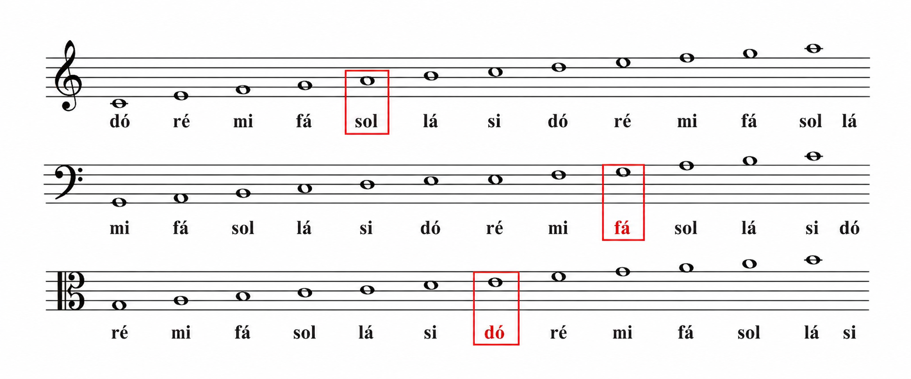
// mudar fotoFigura é a forma que representa a duração dos sons na música, indicando quanto tempo cada nota deve ser tocada.
Pausa é o silência na música, e possui duração variável.
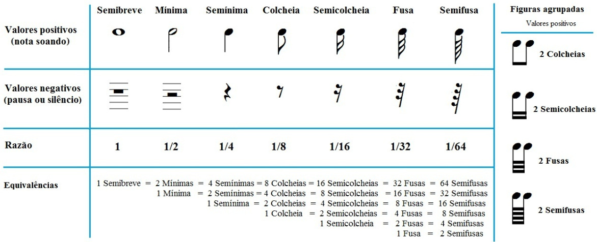
Pulso (pulsação) é o movimento contínuo, sobre o qual se organizam as durações dos sons.
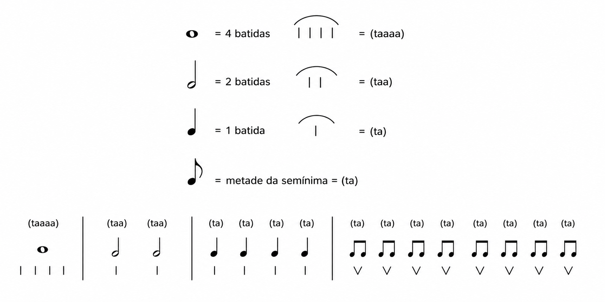
É um ponto colocado a direita da nota e serve para aumentar a metade do seu valor.
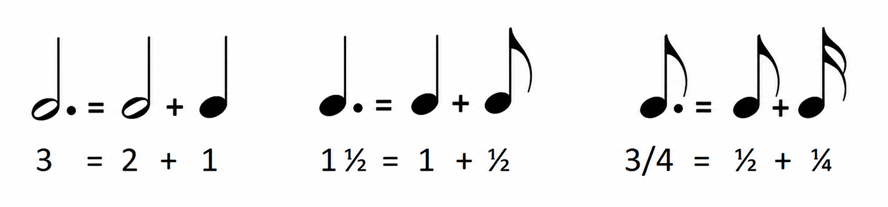
Servem para aumentar ou abaixar a altura das notas.
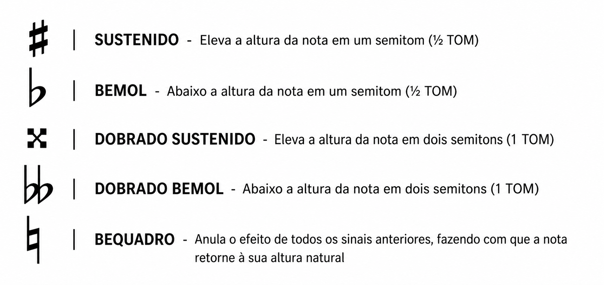
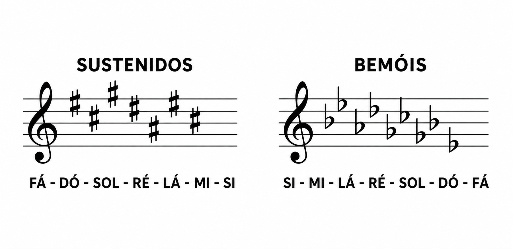
São 2 números sobrepostos que indicam a unidade de tempo e unidade de compasso. São esses compassos que dão os valores para cada figura
Unidade de Compasso (de cima): indica a quantidade de tempos que vai dentro do compasso.
Unidade de Tempo (de baixo): Indica a figura que vale 1 tempo dentro do compasso.
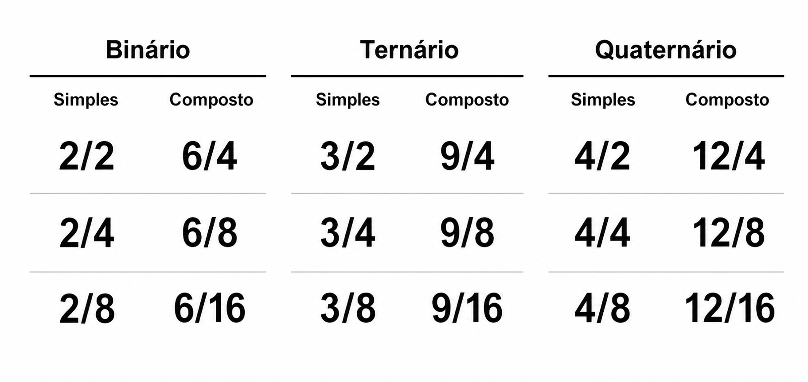
Tom: É um intervalo entre 2 notas constituído por 2 semitons.
Semitom: É o menor intervalor entre 2 notas
Intervalo: É a diferença de altura entre 2 notas
Só existem 2 semitons naturais (MI-FA | SI-DO), os demais são semitons cromáticos.
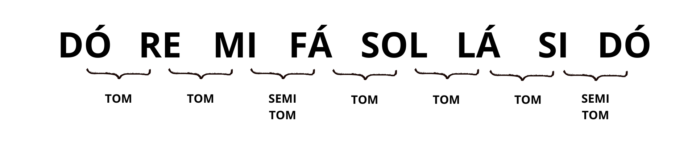
É uma escala de 12 notas, formadas por semitons (de meio em meio tom).
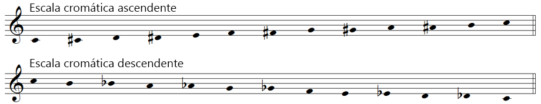
Utilizada na música popular para representar acordes (tríades)
Os sons musicais são representados por 7 notas: DÓ, RE, MI, FÁ, SOL, LÁ, SI. E cada nota tem uma dessas notas tem uma representação em cifra:
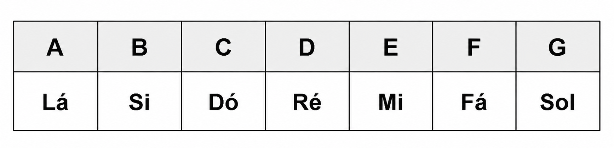
É uma sequência de 8 notas que formam 5 tons e 2 semitons (os dois naturais)
Modo Maior: Os semitons ficam entre os graus 3|4, e 7|8, os demais graus são tons.
Modo Menor: Os semitons ficam entre os graus 2|3, e 5|6, os demais graus são tons.
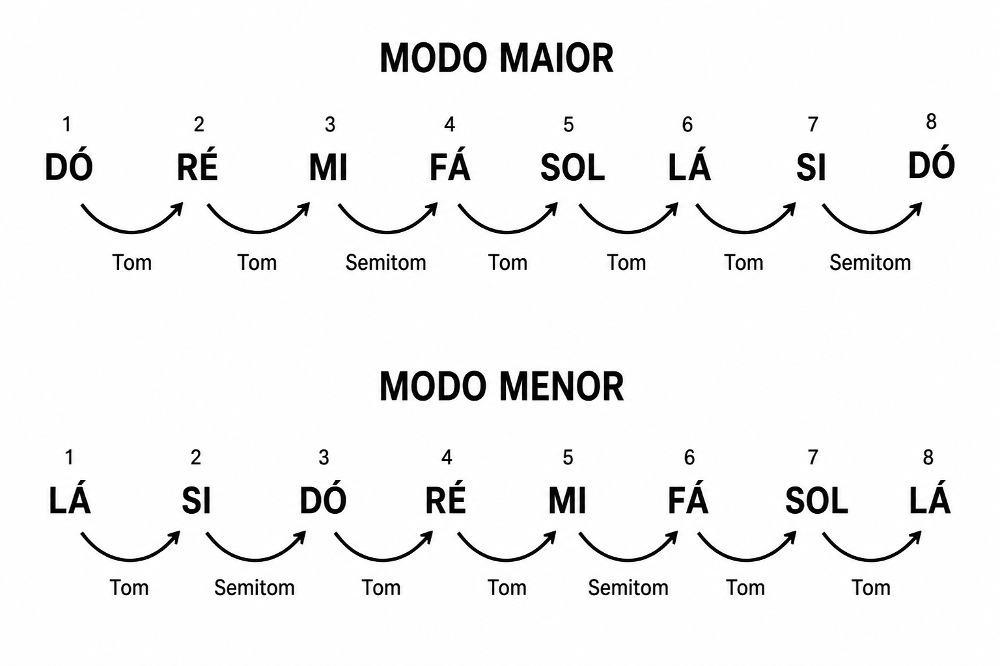